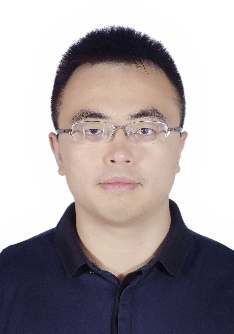

| XiaoFeng Wang | |
|---|---|

|
XiaoFeng Wang, Dr. XiaoFeng Wang is a James H. Rudy Professor of Computer Science and Engineering at Indiana University and an IEEE Fellow. At IU, he is also a Co-Director of Center for Security and Privacy in Informatics, Computing and Engineering, and the Director of the Master of Science in Secure Computing (MSSC) program. Dr. Wang serves as the Director and leading PI of Center for Distributed Confidential Computing (CDCC), a Frontiers Project in Secure and Trustworthy Computing funded by the National Science Foundation. The project is a multi-institution effort, involving faculty from IU (Lead), CMU, Duke, OSU, Penn State, Purdue, Spelman, UIUC and Yale. The center aims at laying the technological foundations for practical data-in-use protection based on Trusted Execution Environments (TEE) over today and tomorrow’s cloud and edge platforms, which is critical to the advance of AI and data science. Dr. Wang is the Chair of ACM Special Interest Group on Security, Audit and Control (SIGSAC), and was also TPC Co-Chair of the ACM Conference on Computer and Communications Security (CCS), the ACM’s flagship security and privacy conference, during 2018 and 2019. In the past 20 years, Dr. Wang has been working on a broad range of research topics in systems security and data privacy. He is considered to be one of the most prominent systems security and privacy researchers, a top author according to online statistics such as CSRankings, System Security Circus (Eurecom), and Top Authors, the Systems Cirus (EPFL). Dr. Wang is known for his high-impact research on security analysis of real-world systems and biomedical data privacy. Particularly, the projects he led on side-channel analysis and mitigation, payment and single-sign-on API integrations, Android and iOS security and IoT protection have changed the way the industry built computing systems. Also he is a pioneer researcher on human genome privacy and a co-founder of the iDASH Genome Privacy Competition that contributes to reducing the gap between security and cryptography research and real-world demands for biomedical data sharing and computing protection. More recently, he is actively working on TEE-based Data-in-Use protection for supporting AI, Trustworthy AI, and application of AI technologies (such as NLP and deep learning) to protect computing systems, LTE/5G networks in particular. For his work, Dr. Wang has received numerous awards, including Award for Outstanding Research in Privacy Enhancing Technologies (the PET Award), Best Practical Paper Award at the 32nd IEEE Symposium on Security and Privacy (IEEE S&P Oakland), and two Distinguished Paper Awards at the 26th Network and Distributed System Security Symposium (NDSS). His work has been extensively reported by public media, including CNN, MSNBC, Forbes, Slashdot, Nature News, etc. Dr. Wang’s research has been supported by NSF, NIH, ARO, IARPA, and other federal funding agencies and industry. Since joining IU in 2004, Dr. Wang has been serving as PI on research projects totaling nearly $23 million (by 2022). |
| Title: Confidential Computing: Challenges Today and Opportunities Tomorrow | |
| Abstract: The rampage of incessant cyber attacks have caused the disclosure of billions of users’ private data, shaking the Internet to its core. In response, various data privacy laws and regulations have emerged, forcing the industry to change their practice and bringing the demand for large-scale secure computing to the spotlight. Such a demand, however, cannot be met by the state-of-the-art cryptographic techniques, even with decades of effort, due to the overheads (speed, bandwidth consumption) they incur. To narrow the gap, recent years have seen rapid progress in hardware based trusted execution environments (TEE), such as Intel SGX, AMD SEV and ARM TrustZone, which enable efficient computation on encrypted data within a secure enclave established by a trusted processor. In this talk, I will present our research on understanding and addressing the security challenges in this new secure computing paradigm and enhancing its design to achieve scalability, for the purpose of supporting accelerated machine learning. Further I will present the big questions that need to be answered in the area and introduce our genome privacy competition as a synergic activity that helps move the science in this area forward. | |
| Yier Jin | - | |
|---|---|---|

|
Yier Jin, Dr. Yier Jin is the courtesy professor at the University of Florida. He is also the co-chair of the IEEE Hardware Security and Trust Technical Committee (HSTTC). His research focuses on the areas of embedded systems and Internet of Thing (IoT) design and security, trusted hardware intellectual property (IP) cores and hardware-software co-design for modern computing systems. He is also interested in artificial intelligence (AI) security and its applications in hardware domain. He received various Best Paper Awards from top-tier conference including Design Automation Conference (DAC) 2015, IEEE Symposium on Hardware-Oriented Security and Trust (HOST) 2017, and IEEE Security and Trust (Oakland) 2022. He is the IEEE CEDA Distinguished Lecturer and a senior member of IEEE. | |
| Title: Invisible Finger: Practical Electromagnetic Interference Attack on Touchscreen-based Electronic Devices | ||
| Abstract: Touchscreen-based electronic devices such as smart phones and smart tablets are widely used in our daily life. While the security of electronic devices have been heavily investigated recently, the resilience of touchscreens against various attacks has yet to be thoroughly investigated. In this talk, I will show that touchscreen-based electronic devices are vulnerable to intentional electromagnetic interference (IEMI) attacks in a systematic way and how to conduct this attack in a practical way. I will show how to calculate both the minimum amount of electric field and signal frequency required to induce touchscreen ghost touches. I will further analyze our IEMI attack on real touchscreens with different magnitudes, frequencies, duration, and multitouch patterns. This new attack works directly on the touchscreen circuit regardless of the touchscreen scanning mechanism or operating system. I will conclude the talk with potential solutions for touchscreen protection against IEMI, or similar, attacks. | ||
| 区文浩 | - | |
|---|---|---|
| 区文浩 , Dr Man Ho Allen Au is an associate professor at the Department of Computer Science of the University of Hong Kong (HKU) where he leads the cyber security & post-quantum cryptography Laboratory. Before joining HKU, he was an associate professor in the Department of Computing of the Hong Kong Polytechnic University. Dr Au’s research interests include information security, applied cryptography, blockchain technology, and their applications. He has published over 190 refereed papers in top journals and conferences, including CRYPTO, ASIACRYPT, CCS, NDSS, S&P, SIGMOD, SOSP, IEEE TIFS, TDSC, etc. He is a recipient of the 2009 PET runner-up award for outstanding research in privacy-enhancing technologies. Dr Au’s research has generated significant social and economic impact. His digital signature technology has been used in the Hyperledger Fabric project, the most popular blockchain infrastructure supported by big industry players like IBM, Intel, and SAP. He is a general co-chair of ACM ASIACCS 2021 and an expert member of the ISO/IEC JTC 1/SC 27 working group 2 - Cryptography and security mechanisms. | ||
| Title: Cryptography in Blockchains and Their Applications | ||
| Abstract: Conceptualized 12 years ago as a core component of Bitcoin, blockchain has gained a vast amount of interest. Informally speaking, a blockchain is a distributed, shared, and immutable ledger that maintains a growing list of ordered records. It became extremely popular among the industries in the last few years. Many companies are exploring applications of blockchain beyond cryptocurrencies. In this talk, the speaker will introduce blockchain and highlight some of the latest development in this area. In particular, we will discuss the role of cryptography in blockchains, and why it is crucial. We will also discuss attacks that may circumvent present cryptographic protection mechanisms. Topics covered include threshold cryptosystems, anonymous credentials, ring signatures, zero-knowledge proofs, and post-quantum cryptography. Finally, we will conclude the talk with challenges related to the adoption of blockchain technologies and insights developed from our experience. | ||
| 张熙 | - | |
|---|---|---|
| 张熙, 北京邮电大学副教授，博士生导师，网络空间安全学院副院长，可信分布式计算与服务教育部重点实验室副主任，国家级青年人才。2006年和2012年分别于哈尔滨工业大学和清华大学计算机系获得学士和博士学位。2015年至2016年于美国伊利诺伊大学芝加哥分校访问。主要从事数据挖掘、机器学习与安全的交叉研究，包括社交媒体分析，可信人工智能和隐私计算等。研究成果发表在IEEE TKDE, KDD, IJCAI, AAAI, ICDM, CIKM等重要期刊和会议上。担任中国网络空间安全协会常务理事单位代表，中国中文信息学会青工委委员，曾获中国电子学会科技进步一等奖和中央网信办表彰。 | ||
| Title: 多模态虚假信息检测技术研究 | ||
| Abstract: 本次报告主要介绍在多模态虚假信息检测方面的一些工作。考虑到社交媒体上虚假信息传播过程中丰富的多模态信息提供了更多的线索，基于多模态信息融合的社交媒体虚假信息检测技术有助于在挖掘丰富语义特征的基础上做到高效判别，然而传统深度模型由于存在鲁棒性和可解释性的不足，我们进一步引入知识图谱、模型可解释性和鲁棒性的增强技术，提升虚假信息检测模型的可信性，使其更好的适应真实复杂对抗的场景。 | ||
| 罗夏朴 | |
|---|---|
| 罗夏朴, Xiapu Luo is an associate professor in the Department of Computing, The Hong Kong Polytechnic University. His research focuses on Mobile/IoT security and privacy, Blockchain/smart contracts, Network/Web Security and Privacy, Software Engineering and Internet Measurement with papers published in top security/software engineering/system/networking conferences and journals. His research led to night best/distinguished paper awards, including ACM SIGSOFT Distinguished Paper Award in ISSTA'22, ACM SIGSOFT Distinguished Paper Award in ICSE'21, Best Paper Award in INFOCOM'18, Best Research Paper Award in ISSRE'16, etc. and several awards from the industry. He regularly serves in the program committee of top security conferences and is an editor of IEEE/ACM Transactions on Networking. | |
| Title: Revisiting Private Information Leakage via Intent and Traffic | |
| Abstract: It is well known private information in Android apps can be directly obtained by abusing the Intent mechanism and be inferred by analyzing their network traffic. In this talk, we will report two new observations. First, we uncover that there is a previously unknown attack surface in Android framework that can be exploited by unauthorized apps to violate the access control. Second, we found that it is possible to identify method-level fine-grained user action of Android apps by combining the analysis of apps and their network traffic. | |
| 陆荣幸 | |
|---|---|
| 陆荣幸, Rongxing Lu is a Mastercard IoT Research Chair, a University Research Scholar, an associate professor at the Faculty of Computer Science (FCS), University of New Brunswick (UNB), Canada. Before that, he worked as an assistant professor at the School of Electrical and Electronic Engineering, Nanyang Technological University (NTU), Singapore from April 2013 to August 2016. Rongxing Lu worked as a Postdoctoral Fellow at the University of Waterloo from May 2012 to April 2013. He was awarded the most prestigious “Governor General’s Gold Medal”, when he received his PhD degree from the Department of Electrical & Computer Engineering, University of Waterloo, Canada, in 2012; and won the 8th IEEE Communications Society (ComSoc) Asia Pacific (AP) Outstanding Young Researcher Award, in 2013. Dr. Lu is an IEEE Fellow. His research interests include applied cryptography, privacy enhancing technologies, and IoT-Big Data security and privacy. He has published extensively in his areas of expertise. Currently, Dr. Lu serves as the Chair of IEEE ComSoc CIS-TC (Communications and Information Security Technical Committee), and the founding Co-chair of IEEE TEMS Blockchain and Distributed Ledgers Technologies Technical Committee (BDLT-TC). Dr. Lu is the Winner of 2016-17 Excellence in Teaching Award, FCS, UNB. | |
| Title: Efficient and Privacy-Preserving Similarity Query with Access Control in eHealthcare | |
| Abstract: Similarity queries, giving a way to disease diagnosis based on similar patients, have wide applications in eHealthcare and are essentially demanded to be processed under fine-grained access policies due to the high sensitivity of healthcare data. One efficient and flexible way to implement such queries is to outsource healthcare data and the corresponding query services to a powerful cloud. Nevertheless, considering data privacy, healthcare data are usually outsourced in an encrypted form and required to be accessed in a privacy-preserving way. In the past years, many schemes have been proposed for privacy-preserving similarity queries. However, none of them is applicable to achieve data access control and access pattern privacy preservation. Aiming at this challenge, we propose an efficient and access pattern privacy-preserving similarity range query scheme with access control (named EPSim-AC). | |
| 王伟 | |
|---|---|
| 王伟 , 北京交通大学教授，博士生导师，信息安全系主任，智能交通数据安全与隐私保护技术北京市重点实验室副主任，区块链研究中心主任。中国计算机学会（CCF）杰出会员；CCF区块链专业委员会常务委员。北京市网络法学研究会常务理事。长期致力于网络与系统安全、数据安全及隐私计算理论与技术研究。主持国家自然科学基金重点项目，国家重点研发计划课题、子课题等项目20余项。提出了融合多源异构动态数据的网络和系统异常行为分析与检测框架、模型和方法，并构建了可信任的隐私计算理论与技术。发表相关学术论文100余篇；主持或参编行业或国家标准8项。连续入选爱思唯尔（Elsevier）网络空间安全领域 “中国高被引学者” 。担任期刊Computers & Security编委，期刊Frontiers of Computer Science 的青年AE和《网络空间安全》期刊编委。获省部级科技进步二等奖2项。 | |
| Title: 车路协同隐私计算 | |
| Abstract: 车路协同是智慧交通重要的应用场景，可提高通行效率，保障交通安全，是我国实现“交通强国”的必由之路。然而，车路协同需要车、路各主体提供大量的数据，但这些数据本身包含很多用户隐私，可信的协同计算成为难题。将报告可信任的隐私增强计算方法，可在保护用户隐私的前提下，对数据中蕴含的知识进行协同和计算，实现智慧交通中的车路协同。 | |
| 关振宇 | |
|---|---|
| 关振宇, 北京航空航天大学教授，博士生导师，青年长江学者。从事硬件安全领域研究，主持国家自然基金等国家/省部级项目11项。以第一/通信作者发表TPAMI等期刊论文22篇，高被引论文5篇。成果获教育部技术发明一等奖，中国指控学会科技进步一等奖。 | |
| Title: 同态计算软硬件协同关键技术研究 | |
| Abstract: 同态计算方案已在包括FPGA、ASIC和GPU和CPU平台上对单独加密算法取得了较为明显的实现效果，但实际应用任务中的顶层计算任务与底层同态硬件算子间存在严重割裂，很难直接对接到实际任务中取得端到端的良好效果。因此，本报告分享目前同态计算在软硬件加速上的研究进展，并分享本团队在构建同态加密的软硬件协同密态计算框架方面的工作。 | |
| 郑昉昱 | - | |
|---|---|---|
|  | 郑昉昱, 博士，助理研究员，中科院信工所引进优秀青年人才，长期从事密码应用、密码测评技术、网络与系统安全等领域技术研究工作，作为第一/通信作者在TIFS、ACSAC、ESORICS、IPDPS等国内外知名会议/期刊累计发表20余篇，编写《密码软件实现与密钥安全》《商用密码应用与安全性评估》两本专著，主持多项国家重点研发计划子课题、国家自然科学基金、CCF-腾讯犀牛鸟基金，获得党政密码科技进步三等奖（排名第三），主持/参与密码国家/行业标准制定10余项，包括GB/T 37902《密码模块安全要求》、GB/T 39786《信息系统密码应用基本要求》等。 | |
| Title: Heterogeneous-PAKE: Bridging the Gap between PAKE Protocols and Their Real-World Deployment | ||
| Abstract: PAKE protocol has been considered a suitable substitute for the prevailing hash-based authentication which is vulnerable to various attacks. However, vendors are discouraged by both its prohibitively computational overheads as well as integrating costs, leading to its limited use since being proposed. In this talk, I will present Heterogeneous-PAKE, an entire PAKE stack with high-performance and compatibility for both client-side and server-side for Web systems. Heterogeneous-PAKE harvests high throughput on the server-side which supports over 1,650k concurrent user per second. Meanwhile, on most testing platforms, the latency is well controlled within user-acceptable bounds, which is less than 3x that of a traditional authentication approach based on Bcrypt. The empirical results demonstrate that the Heterogeneous-PAKE is a very economical (with only a GPU-ready server) and convenient (with an easy-to-integrate software stack without user participation or database rebuilding) solution for upgrading existing systems with high-performance PAKE services. | ||